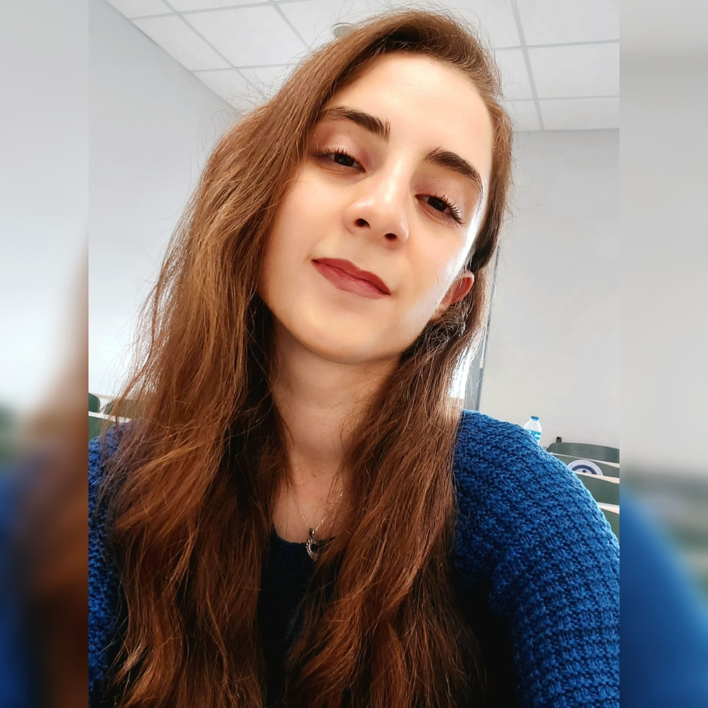

Özgeçmiş

Eğitim Bilgilerim
-
22 Haziran 2002 Sivas doğumluyum.
-
İlkokul öğrenimimi Sivas/Yıldızeli Toki Karşıyaka İlköğretim Okulunda tamamladım.
-
Buna binaen aynı yerde Fatih Sultan Mehmet Ortaokulunda ilköğrenimimi tamamen bitirdim.
-
Lise öğrenimimi İhramcızade Anadolu İmam Hatip Lisesinde bitirdim.
-
Şu anda Sakarya Üniversitesi Bilgisayar Mühendisliği 1. sınıf öğrencisiyim.